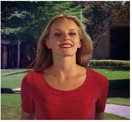

Ensure that the Smart Select BG Color action is selected (it should be at this time as it is the default operation mode).
Position the cursor in the bluescreen area (or whatever background color you are using), usually somewhere near the foreground object. Hold the Ctrl/Cmd key down and sample the targeted background color. Release the mouse button and Primatte starts the compositing process. If the foreground shot was done under ideal shooting conditions, Primatte has done 90-95% of the keying in this one step and your image might look like this.

However, if you have a very unevenly lit backing screen, you may not be getting the results you’re after. If this is the case, enable adjust lighting on the Primatte properties. For more information, see Actions Section.
NOTE: Primatte works equally well with any color backing screen. It does not have to be a specific shade of green or blue.
TIP: If you dragged the cursor in the blue area, Primatte averages the multi-pixel sample to get a single color to adjust to. Sometimes Primatte works best when only a single pixel is sampled instead of a range of pixels. The color selected at this point in the Primatte operation is critical to the operation of the node from this point forward. Should you have difficulties further along in the tutorial after selecting a range of blue shades, try the Smart Select BG Color operation again with a single dark blue pixel or single light blue pixel. You can also switch to the alpha channel view and click around in the bluescreen area and see the different results you get when the initial sample is made in different areas.
TIP: If you would rather make a rectangular selection and not use the default 'snail trail' sampling method, you can do a Ctrl+Shift+drag sample.
TIP: You can discard sampled pixels by Ctrl/Cmd+right-clicking in the Viewer.
TIP: If the foreground image has a shadow in it that you want to keep it in the composite, do not select any of the dark blue pixels in the shadow and the shadow comes along with the rest of the foreground image.
The second and third steps in using Primatte require viewing the matte or alpha view in the Viewer window. Press the A key on the keyboard to change to the alpha view. The image displayed changes to a black and white matte view of the image that looks like this.
|
|